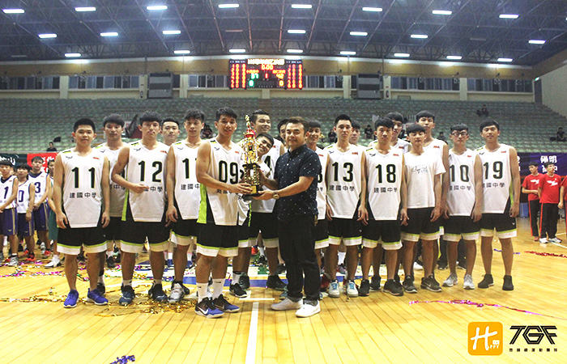

貼文時間：2017/06/23

學富五車、才高八斗是外界對於台灣第一學府建國中學的第一印象，但他們不僅只會讀書，在運動上更是天賦異稟。各個彬彬有禮，這與學校校風有著極大的關係，校歌裡頭有一段歌詞是體格強，志氣大；勞不辭，苦不怕，樂群敬業，忘己利他；知恥力行，愛校如家。
因為夢想，是一種力量，想打球，所以拼命爭取，即便苦也值得。要球技也要學歷，做好每一件該做的事情，就是建國中學。
來自四面八方的球員，風格截然不同(明仁、金華、永吉)如何將各家風格整合，考驗著高教練。
高教練表示 :「不論來什麼材就是練，針對大家優缺點去磨合，整頓，設計出最適合球員的路線套路去練習，想進步就是靠不停的練習。日復一日，也許乏味，但為了夢想，一切都是甘之如飴的。」身高一百九十五公分禁區大鎖顏宗瑋，來自籃球名校苗栗明仁高中，能裡能外的他，可從中鋒球員打到外線得分後衛的位置，高教練表示 :「顏宗瑋這個點若是可以穩定發揮，相信對於建中來說是肯定是好事一件，但身體素質與企圖心尚且不夠，但這部分我們會在練習時多給他觀念與訓練，相信他升上二年級會感受到一些壓力，而我也相信那些壓力會使他有所成長的。」
高教練表示: 「球員皆來自不同環境，大多為國中就有訓練過的，底子並不差，但畢竟甲組和乙組是有差距的，少了鎂光燈與觀眾的乙組是他們選擇的路，他們就必須自己調適心態，我只能輔助他們。」有句名言是綠葉襯托紅花的美，但在建中，這種行為可是嚴禁的，高教練表示：「球隊不允許明星球員的出現，避免因為一個人狀況不好，導致戰力熄火，場上每個人都必須摸到球，這才是贏球關鍵，才是團隊。」
高教練開口的第一句話是：「沒有人可以替代黃宣這個位置，但可以分擔他工作的人很多，而我們正在積極培養他們自動化訓練，希望每個人都可以各其所職，互相協助，打開格局。」籃球界說大似乎也沒大去哪裡，說小似乎也不大對，高教練提到格局時，堅定地說：「太小了還不夠，改變生態靠體育是不夠的，需要栽培更多普通生，讓他們喜歡運動，也許將來普通生不會從事運動相關工作，但他們會記得籃球教會他們的事情，對我們社會是有正面貢獻的。」
融入新元素， 培養隊友間的默契，是高教練目前所設立的短期目標，而高教練表示：「高中生就是愛玩了點，但了解自己分寸，畢竟球隊規定不能破壞，這就是我的最低底線，而你要當社團就回家，不然比賽怎麼打，這就是現實，心態錯就是輸。」問到未來訓練方針時，高教練說：「接下來會特別訓練宗瑋持球進攻能力，因為一百九十五的身高在籃球界十分吃香，而我不想把他太早定位在籃下的位置，我覺得他發揮空間還很大。至於其他人，我也是一樣的原則，那就是不侷限他們的位置，為他們的大學做準備，也許到了對大學會改變位置，提前作練習反倒是件好事。」
一提到建中標語「做對的事」球員們就會緊接「全力以赴」這句話，可想而知，籃球的魅力就是如此，苦不怕，共患難，只為了品嘗青春的氣息。賽季結束，回到原點重新奮戰的建國中學，相約明年的全國戰場上再次激昂。